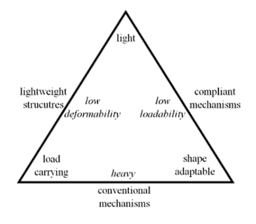
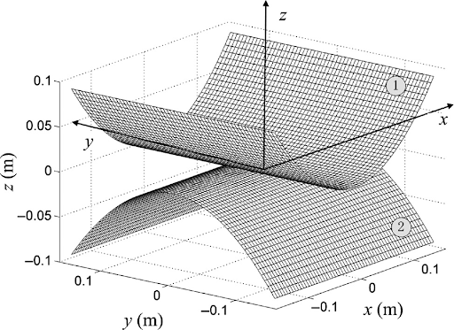
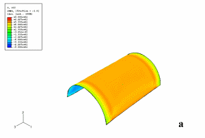

Thesis Research
During my time in Graduate School at Clemson University, I had the opportunity to write a thesis in an area of focus.
My area of focus was on Composite Materials which is a combination of materials to make an optimized material.
More specifically, I dealt with Bistable Laminates which comprise of layers of composite materials.
My Thesis was on An Application of Optimized Bistable Laminates as a Low Velocity, Low Impact Mechanical Deterrent
Abstract:
This research considers the problem of using bistable laminates as a mechanical deterrent to the impending impact of a particle.
The structure will be controlled through an algorithm that will utilize piezoelectric devices to activate them in unison with the bistable laminate to successfully deter.
A novel experimental setup will be constructed to ensure that the bistable laminate stays fixed when acting as a mechanical deterrent.

Before we get into the content of this unique application, I am going to break down the building blocks that we are going to use to get there.
To start us off, the structure used in this application can be broken down into two areas: smart materials and shape morphing structures.
Smart materials have the ability to couple between various physical domains.
An example of this used in this research are piezoelectric materials which have the ability to go between the electrical and mechanical domains.
Next, is shape morphing structures which change shape without external tools. They have a trade off of being light, load carrying, and shape adaptable but all three cannot exist at once.
An example of this is bistable laminates.

So, bistable laminates have two stable shapes and consist of thin layers of composite materials.
The reason that it is bistable is due to its geometry as well as residual stresses that occur after fabrication.
An interesting story is that when i was fabricating these laminates :once it comes out of the oven,
it is still flat but once you remove the fabrication it converts to its bistable shape.
On the slide here are the two stable shapes of the bistable laminate as well as some applications which are daylight control
and morphing a car fender.

Here are some research questions for you to ponder which correlate to the actuation, morphing, as well as the consistency and success of the experimental setup.